狗狗戰隊
忙到深夜才睡的蓋維迪安，早上還不到五點就起床燒開水準備泡茶來喝，今天是星期六，他起得這麼早，而且一大早就換穿乾淨的襯衫。
一問之下才知道原來今天他要回去城市跟家人團聚，幾個他的朋友也要一塊走，這麼開心的好事，難怪他這麼早起，手上拿著的照片是他的小孩
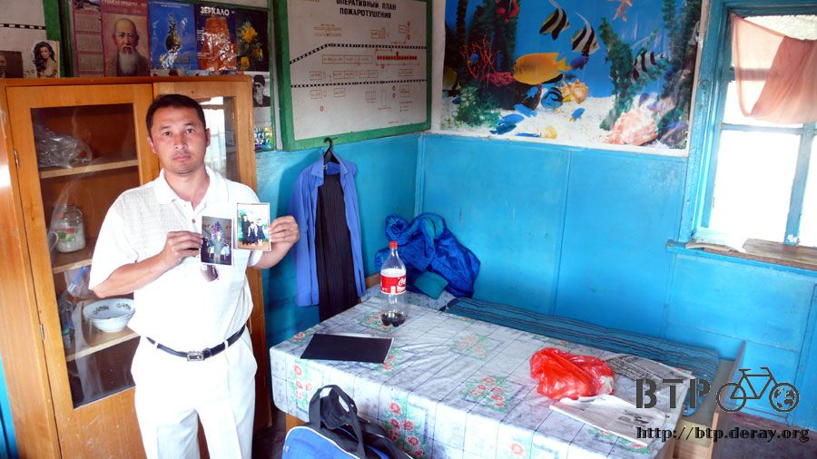
到儲水箱那洗把臉刷個牙，太陽都才剛冒出頭而已，這個是日出不是日落，而且日出的方向是在北方，非常的離奇。
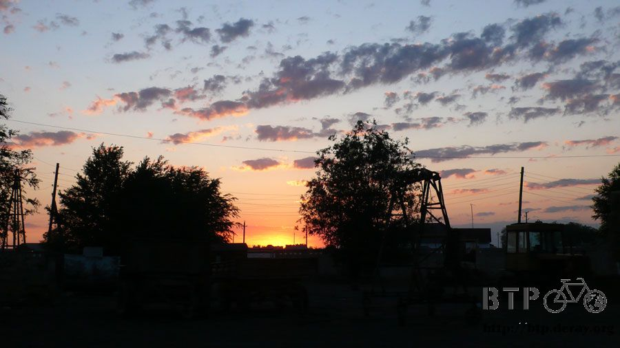
將昨天沒吃完的麵條弄熱之後，再切一顆洋蔥、配上熱紅茶這就是我的早餐了。
還沒拆封的泡麵、沒吃完的一袋麵包就留下來給蓋維迪安當儲糧。
蓋維迪安的朋友來了之後，現在習慣性的都會跟大家一樣用握手打招呼，管他認不認識，先握手再說。
知道我的目標是阿斯塔那之後，他的朋友在報紙上面畫了地圖給我，從科帕往北走，一百公里就會走到小路的盡頭，然後接上往阿斯塔那的大馬路。
但這一百公里可不好走，都是起起伏伏的山坡路，幸好距離不算太遠。
補充完飲水，他們回城市看家人，我又要繼續一天的旅行了～
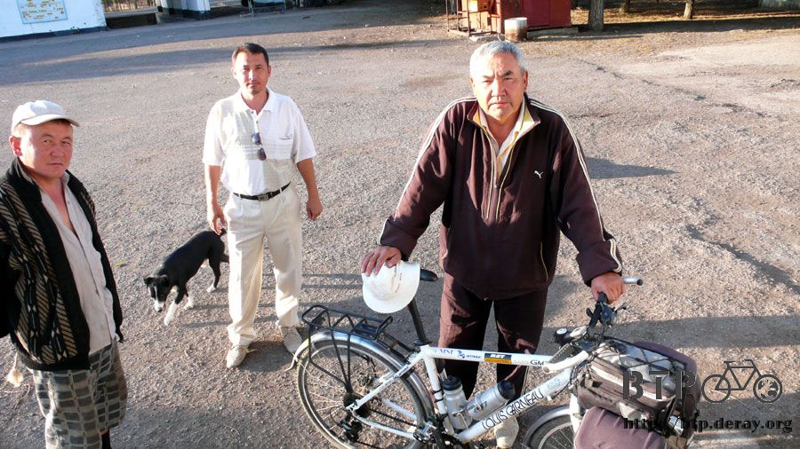
一離開科帕回頭一看，這個座落在金黃草原中的村落，連村落的告示牌都已經斑駁成這樣，字母都快要看不見了。
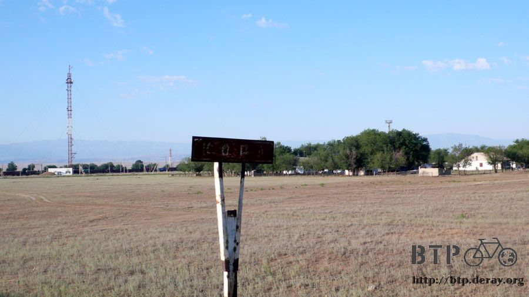
早餐有吃體力比較好，開始爬坡吧～的確是上上下下的爬個沒完，加上路面超爛，所以還要不停的蛇行避開坑洞。
這條路很多地方雜草都已經長到路面上，雙向的車道左右都被雜草佔據，只剩下中央的一線道能走，有更多地方則是連路面都看不到，變成沙子路。
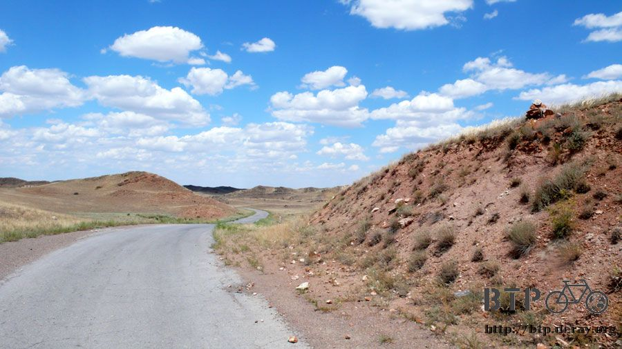
今天是往正北方騎，上午的時候太陽在右邊，帽子必須戴著歪歪斜斜才能遮住刺眼的陽光，到了下午帽子就要換各方向繼續戴歪斜的。
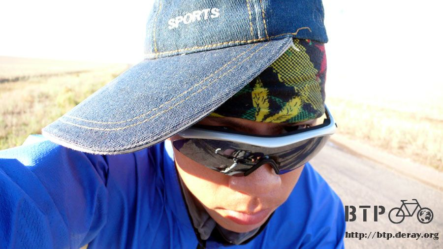
在哈薩克旅行了幾天，深切體認到哈薩克有三多，狗多、鳥多、蒼蠅多。
只要看到路邊有農舍我都會很緊張，因為農舍多半都會養狗，而且狗都是自由的跑來跑去不會關起來，一看到我經過，絕對是蜂擁而上追著我跑。
一邊吠個不停一邊狂追，如果好一點就會有主人出面喊聲制止，不然就只好自求多福。
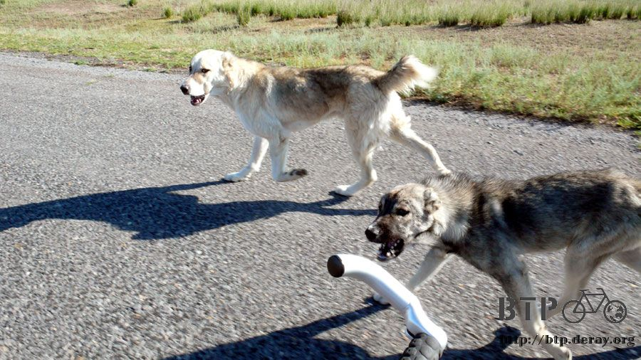
也許該慶幸這些都是人飼養的狗，並不是流浪狗或是野生犬，所以脾氣還算不錯。
雖然那個狂吠的表情看起來很兇猛，但並不會真的給我咬下去。
今天一共被狗追了兩次，但是狗的數量高達九隻。
第一次被五隻狗一起追，主人看情況不對，還騎著馬出來把狗趕回家去。
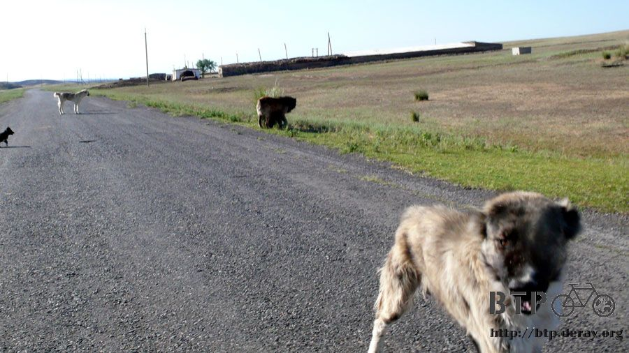
除了狗很多之外，鳥也很多。
荒廢的小鎮都是吵死人的烏鴉，沿路上的草原則是多到數不清的麻雀、老鷹和不知名的鳥類。
全部都隱匿在路邊的草叢裡，騎車經過就像是憑空冒出來一樣集體飛出，而且不會馬上一哄而散，而是像領航員那樣飛在你前頭。
一邊往前騎，他們就慢慢的往前飛，飛太遠了還會停在路上等你，等我趕上之後鳥兒再領著你繼續往前騎。這些鳥的叫聲比烏鴉好聽太多了。
今天也看到很多隻大老鷹，老鷹飛行的姿勢很漂亮，不需要揮動翅膀就能在空中劃出漂亮的弧線飛翔。
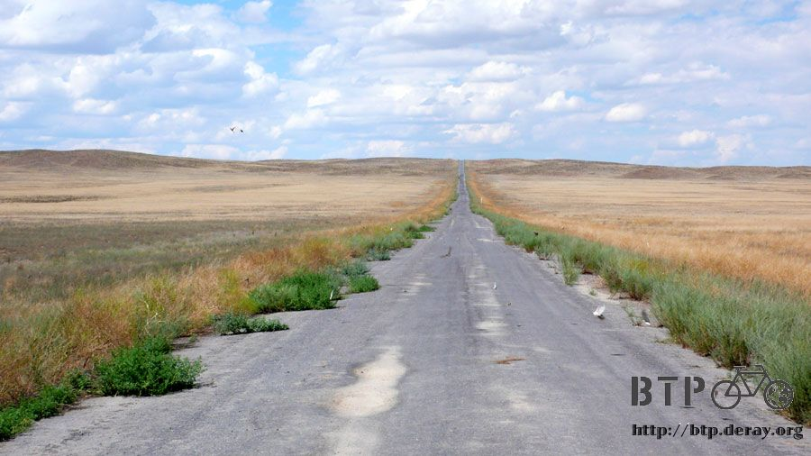
最後就是蒼蠅多，真是多到想揍人的地步，一大堆的蒼蠅，不論是在房間裡、餐桌上、馬路邊，糖罐子裡、衣服上，
所有的地方，只要有空氣就有蒼蠅！唯一不要看到蒼蠅的方式就是將眼睛給閉起來。
騎車累了稍微停下來十秒鐘休息一下，馬上就被蒼蠅給團團包圍住，而且不怕人，趕也趕不走，到處亂鑽，而且居然還會咬人！非常惹人厭。
現在就算不聽歌的時候我也會把iPod的耳機給戴著，阻擋那些煩死人的蒼蠅老是想鑽到耳朵裡面。
出發三個小時之後，到達另外一個也是連城鎮牌子都剝落的小鎮，這裡比科帕還慘，地圖上根本找不到。
可是看起來沒有科帕那麼荒涼，大概是因為地方本來就不大，只要是房子就有住人，不會像科帕那樣整個是廢墟的感覺。
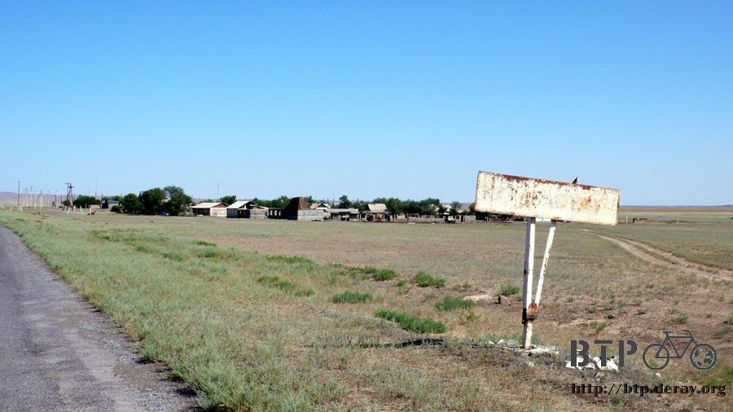
在城鎮的入口問這邊有沒有『商店？』『美嘎進？』
村人指了角落中的一棟房子，因為這些小地方的商店都是沒有掛招牌的，不用問的根本就找不到。
往手指的方向騎過去，馬上又衝出了四隻狗，有一隻超大隻的，猛一看還以為是獅子，一邊狂吠又圍了上來。
喂喂～別鬧了，我只是來買個東西而已，何必這樣咧？
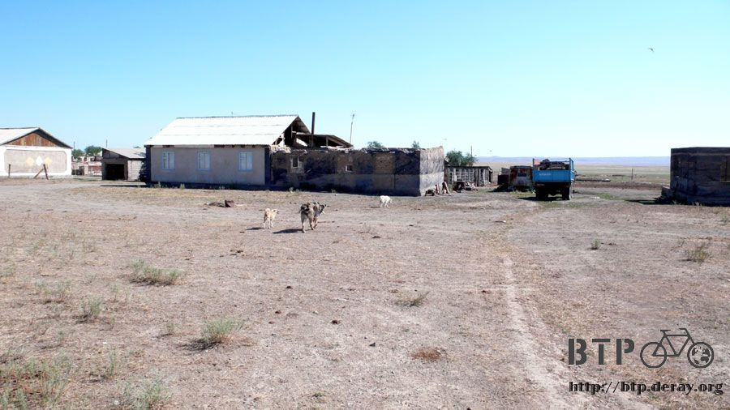
才剛進城鎮而已，馬上又被狗狗逼得往對外的道路騎去，以閃避狗狗的追擊，幸好狗狗的主人，同時也是商店的老闆娘出面制止。
雖然是自己養的狗，但是居然也要拿石頭丟牠們才有辦法讓牠們停止對我狂吠，捲起尾巴悻悻然的回家去。
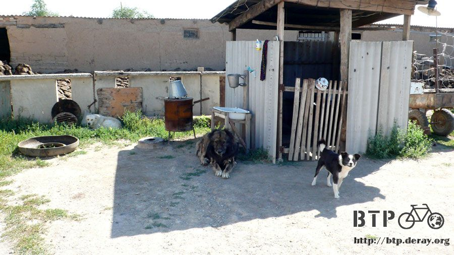
中間那隻超大隻的就是長得像獅子一樣的狗，牠比我還要大隻，今天被狗追了兩次，兩次都很有想尿褲子的感覺。
我領悟到一個事實，如果這些狗不是追好玩的，是真的想要咬我的話，那是不可能跑得掉的，速度差太多了，馬上停下車來撿石頭反擊還比較有勝算。
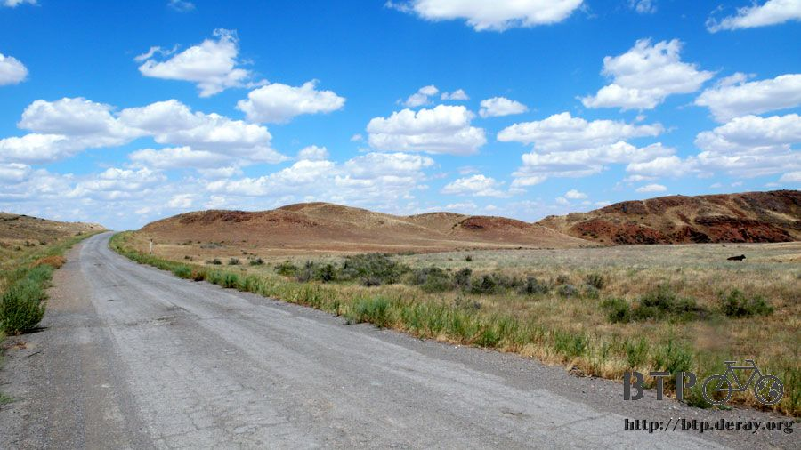
在小商店裡買了兩公升的果汁，標價才100元，非常的便宜，可以一口氣補充水分，現在水都不敢喝太快，以免到時候沒水喝很悽慘。
除了有商店能補充飲水，我還拿出了插頭，試探性的問一下能讓我充電嗎？
結果真的可以～ :)
所以就待在這個一坐下去整個人就會下陷的彈簧椅，喝著果汁整理昨天的遊記，在這個小鎮待到中午十二點才繼續往前騎。
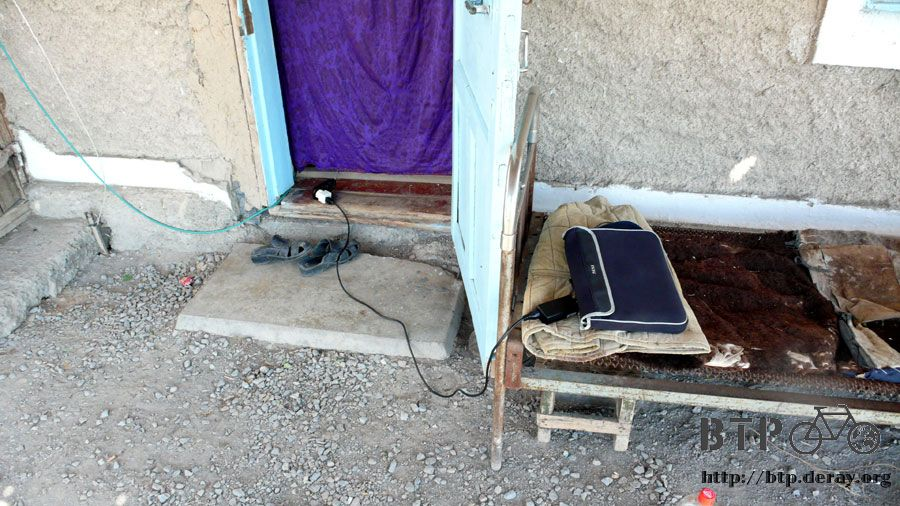
上上下下的爬坡太累了，過了中午之後開始有點體力不支，拆開一包餅乾配著開水就是單車午餐了。
這個午餐有點心酸，嚥下第一口餅乾的時候，很像往乾枯的井底丟下一顆石頭一樣，只產生了空蕩的回音，對填飽肚子效益則不大。
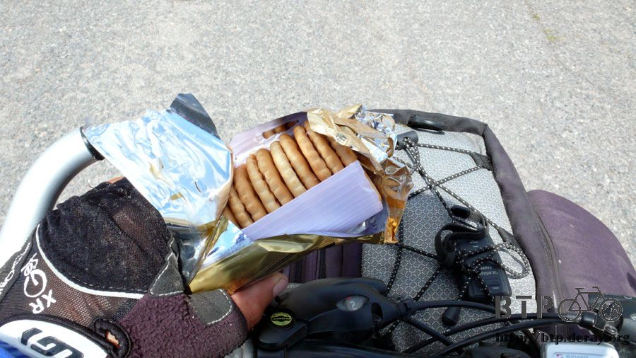
哈薩克的風向很詭異，不像中國那樣一整天都是同一個方向的風勢，這邊是順風、逆風、忽左忽右的側風變幻無常，連將沙層捲的半天高的旋風都有。
聽著耳機中的音樂，氣喘吁吁的爬著坡，很想停下來休息但是一想到那些蒼蠅馬上就會蜂擁而至就覺得很煩。
閉上眼睛十秒鐘騎車，腦袋裡只剩下音樂的旋律，重新睜開眼睛的時候，看到這個景色，我突然有一種感覺：
『我跑到這裡幹嘛？』
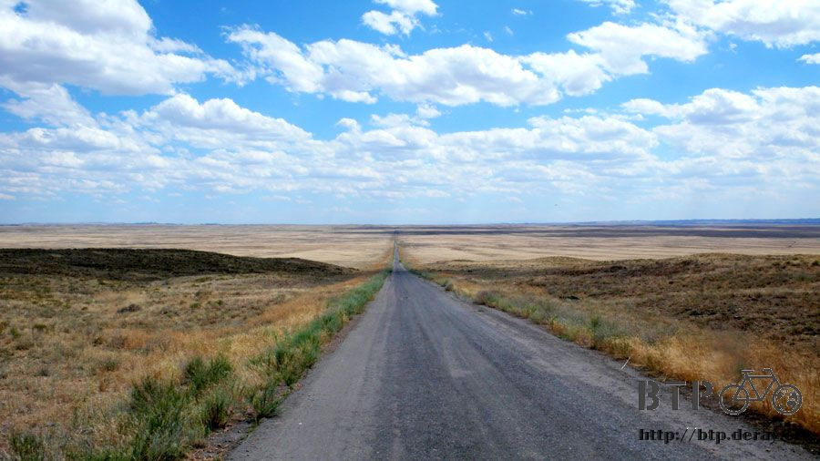
每一個爬坡都看不到盡頭是什麼，終點只有朵朵的白雲，也許盡頭就是其中一朵雲的彼端吧。
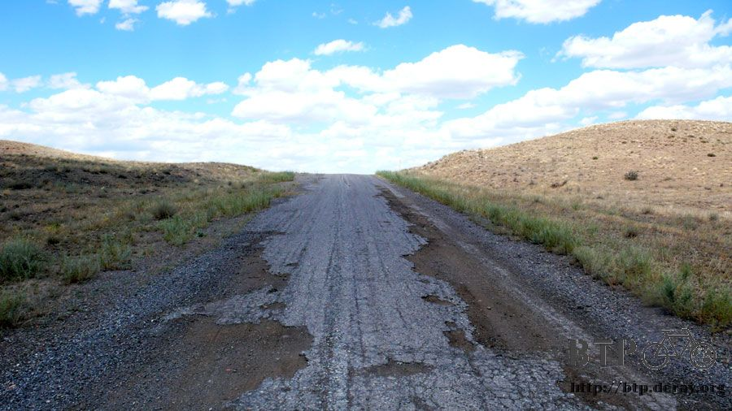
沿路上只有很零星的幾座牧場，看起來不怎麼樣，但是養了好多的馬跟羊。
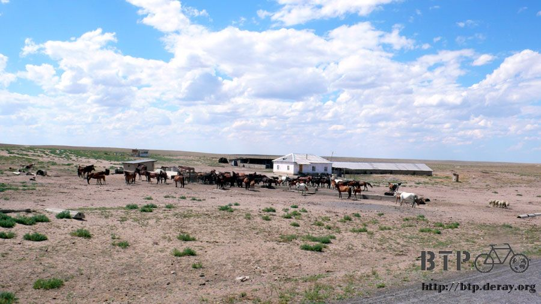
這些黃澄澄的草原，到底是牧草還是雜草，我實在分不清楚，遠遠的看這景色好像是沙漠，但其實都是草原。
雲朵很多，雖然一路上都沒有可以遮蔽的樹木，運氣好的時候就會有雲擋住太陽，讓我享受三十秒的涼快陰影。
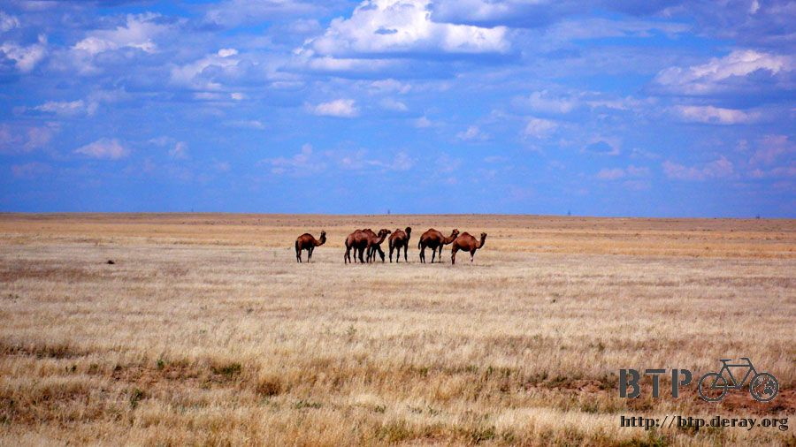
烈日讓空氣搖晃，很難看清楚遠方的景色，遠遠的彷彿看到十幾公里之外有個像是城鎮的模糊影子。
從中午一直騎到下午四點半，終於將這條小路給騎完了。
一個很簡單的牌子樹立在小道的盡頭，這個我就看得懂了，右轉往舊首都『阿拉木圖』，左轉往新首都『阿斯塔那』。
雖然都沒有標示距離，但沒關係，只要方向正確就可以了，慢慢騎總有一天可以到的了。
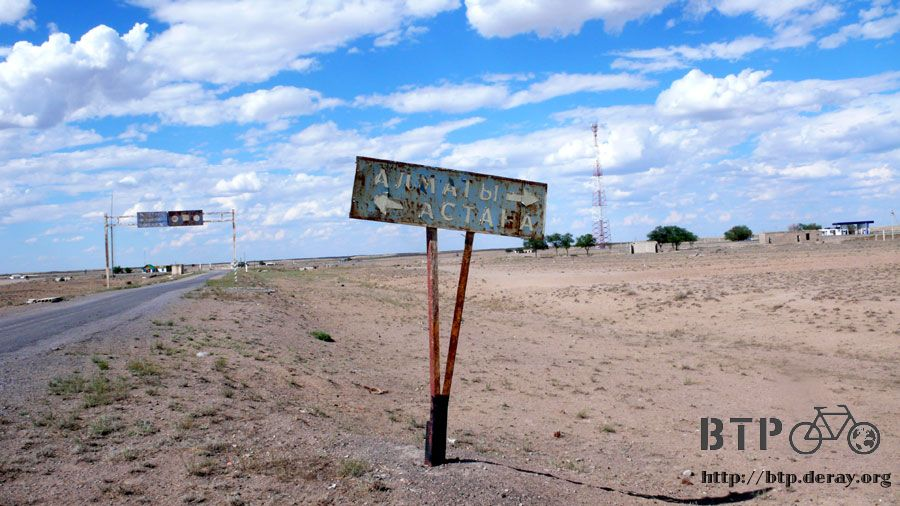
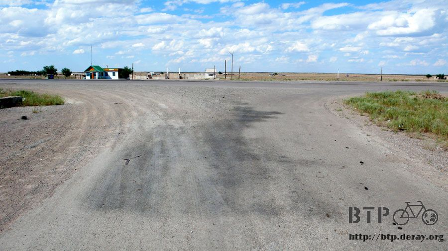
離開小路轉進大馬路，前面依然是無邊際的荒涼乾枯草原，而遠遠就看到的城鎮影子其實只是幾棟沿著馬路做生意的小店而已。
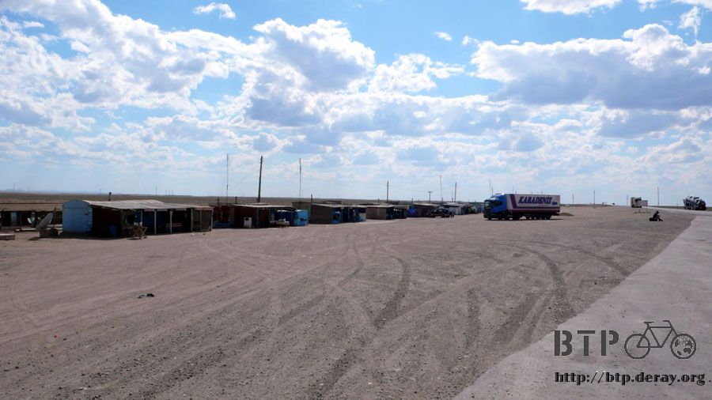
小店賣的大多是燒烤，找了一間看起來感覺不錯的，屋簷底下的空間很寬敞，雖然還不知道今天要睡在哪裡，但是先讓小多休息一下。
卸下小多身上的重擔，我跑去冰箱裡翻出一公升包裝的果汁，冰的涼涼的，既營養又好喝～
順便還點了一些東西吃，一樣請老闆送上好吃的東西，什麼都可以我不挑食。
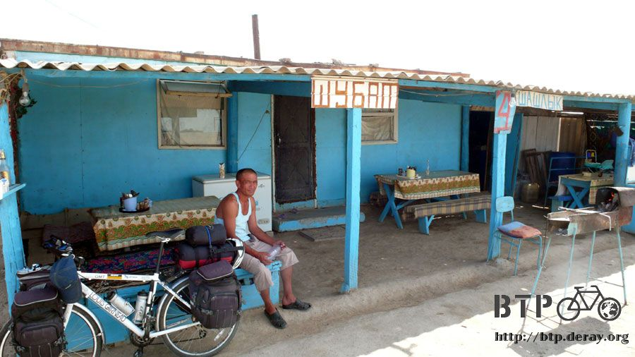
早早的就吃了晚餐，今天吃的是馬鈴薯燉羊肉，味道還可以，稍微腥了一點，料理的技巧沒有中國食物來的精巧。
順便也點了招牌的烤羊肉串，肉串比中國的烤羊肉還要大塊，但是沒有那麼豐富的辛香料，美味的孜然烤肉已經吃不到了。
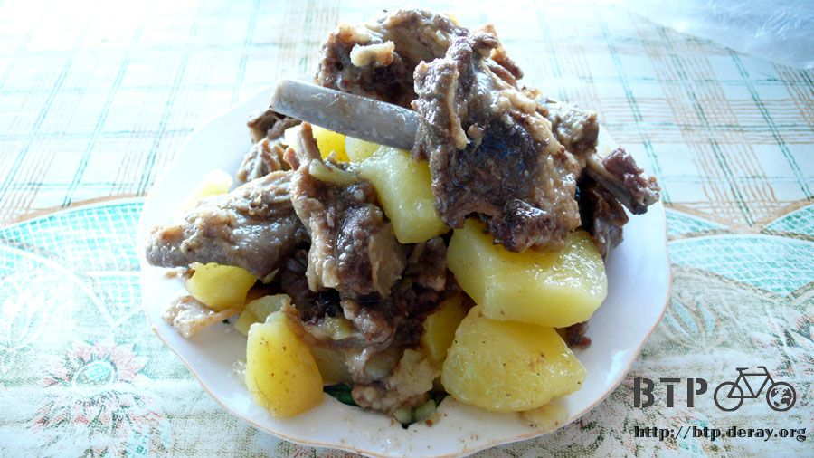
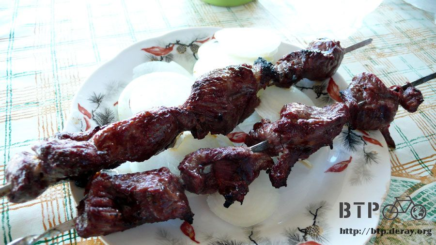
隨後又再拿一瓶果汁，結帳的時候總計跟我拿了一千三百塊，讓我嚇一跳，為什麼那麼貴？
光是果汁的售價就很驚人，這個在商店的售價大多是一百五十元左右，這邊居然賣到兩百五，超貴的！
一天一千五百元的生活開銷，一瞬間就燒光，不在這裡多休息一下怎麼對荷包過的去。
拿出充電器和電腦就窩在屋簷下整理遊記，需要充電的東西一個一個輪流的拿到房子裡面充電。
沒有網路沒關係，遊記不天天寫的話過兩天我就忘記事情的細節和當時的感受。
從坐著的地方看出去是等待搭便車的少年三人組，在搭便車是國家文化的哈薩克，他們要順利上車是很容易的，
才一低頭專住在電腦上，頭又抬起來的時候已經看不見他們的蹤影。
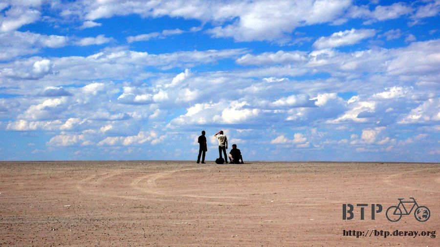
在哈薩克的生活，除了始終找不到的網路，其它的部分已經越來越習慣，天天都在喝的加糖奶茶、煩死人的蒼蠅、追著我跑的狗狗、取代汽水的果汁。
其實我很不了解哈薩克，怎麼看都是一個貧窮的國家，但是物價卻比台灣還貴，明明到處都是荒地一點也不發達，大家都靠什麼在賺錢呢？
多待一陣子，對這個國家應該會有不同的認知吧。
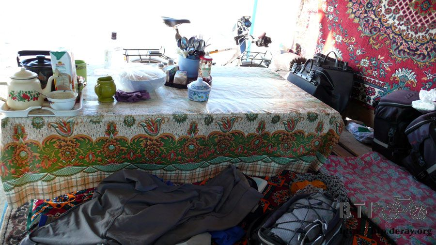
待在用餐的地方，幸好客人不多，四點半抵達之後，除了我以外就沒有別的人光顧，這樣比較不會覺得自己在妨礙別人做生意。
因為騎了兩天的爛路，小多背負重物還要面臨坑洞的考驗，利用這個休息的空檔整備一下車輛，
將貨架的螺絲鎖緊、調整輪胎的鋼絲，一調之下又發現後輪有一條鋼絲鬆脫，而且接不回去了，目前後輪已經有兩條鋼絲鬆脫。
如果哈薩克的大城市有自行車店的話，該把小多送去給師父看一下了。
小多整備好之後就是試騎大會，只限給小朋友騎著玩，報名相當的踴躍，連把座椅調到最低都坐不到椅子的小孩都跑來騎小多～
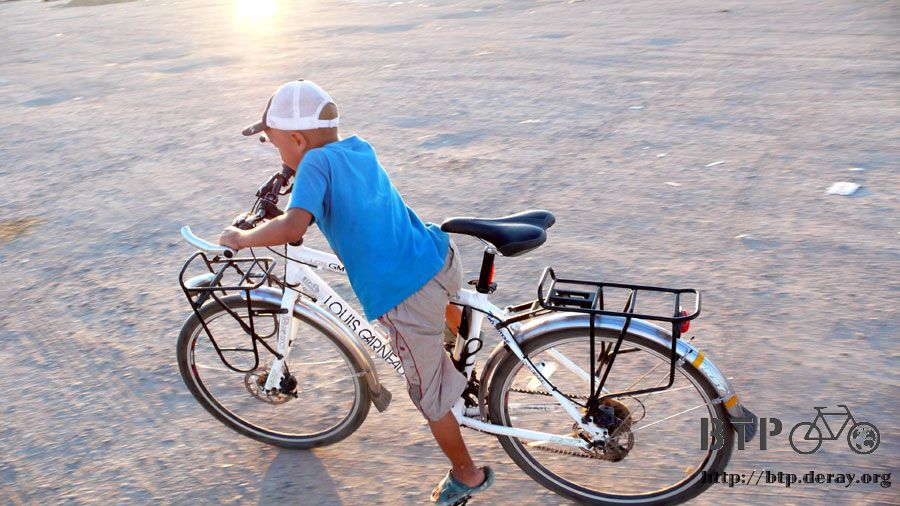
今天已經不想再繼續騎車了，可是又還不知道晚上要睡在哪裡，就這麼待在吃飯的地方休息到晚上九點。
我不敢開口問老闆能不能讓我在這邊睡一晚上，怕萬一被拒絕的話，那我就現在連休息兼充電的地方都沒有了。
九點之後，小店點起了燈，準備繼續做晚上的生意，老闆主動來問我，今天我準備在哪過夜？
我攤開雙手說不知道哪邊可以讓我睡覺。
老闆則揮揮手叫我跟他走，在小店的隔壁是一間柴房，裡面真的是放木柴，是拿來烤肉用的，還放了幾輛壞掉的自行車。
柴房的門口則用一張沒有床墊的彈簧床靠著，老闆說小多跟包包可以放在柴房裡，晚上我就在外頭的彈簧床睡覺吧。
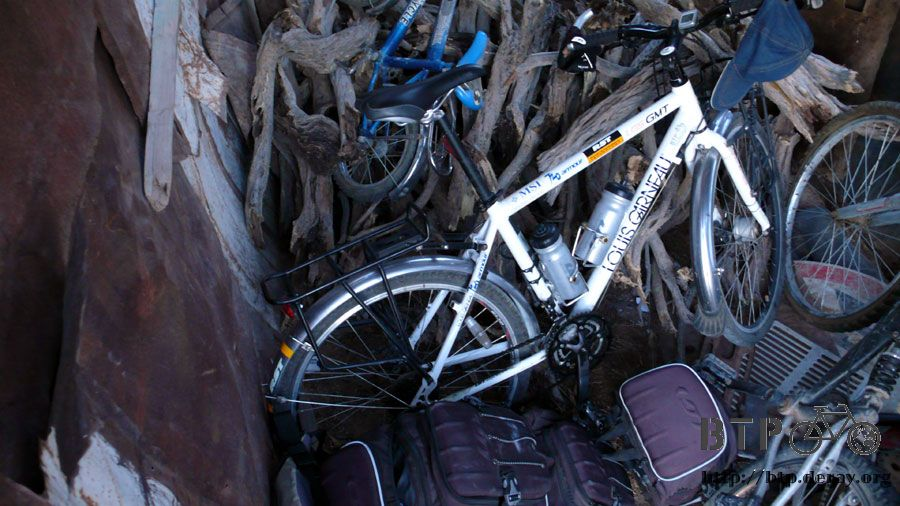
真是個好消息，落腳的地方有了著落，就比較心安，把小多和包包一個一個的放進柴房裡，然後拿出睡袋。
要睡覺的彈簧床超彈的，因為這裡很熱，像這樣通風的彈簧床睡起來比較涼快，所以我就連睡墊都省起來了。
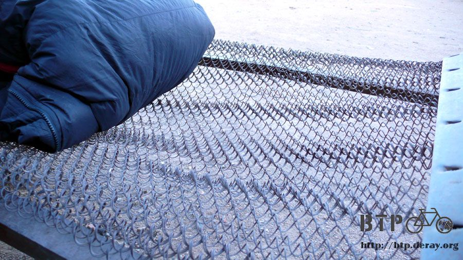
今天看來不會下雨，這裡的蒼蠅沒那麼猖狂，所以連帳篷也省起來。
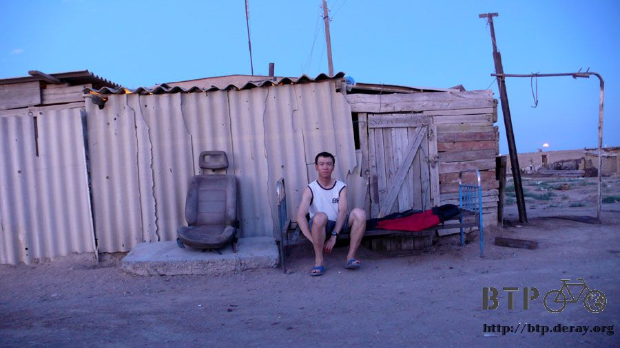
晚餐則跟老闆的家人一起吃飯，媽媽煮了放很多高麗菜絲、馬鈴薯和羊肉的燉湯，配著麵包吃，酸酸的湯還不錯喝。
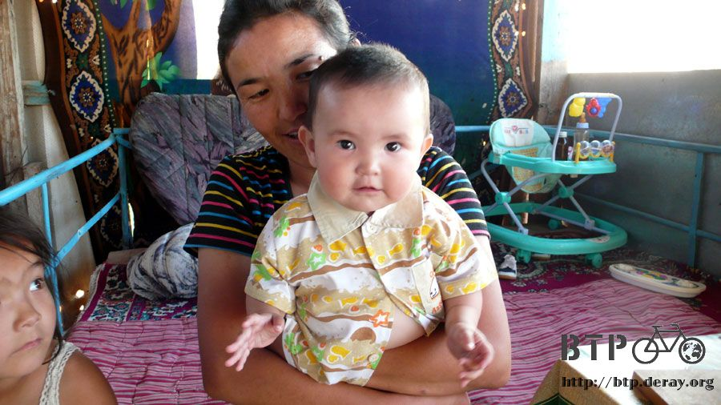
吃飽後九點多準備要睡覺去了，夜裡老闆怕我被冷到，來巡了幾次，最後送來一條毯子，我連忙揮手說不用，這個睡袋很保暖，但老闆堅持所以還是收下。
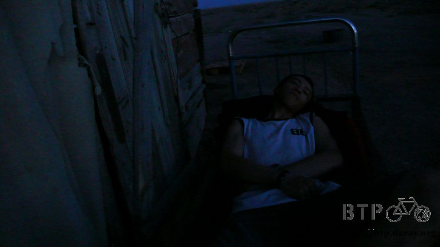
躺在這個整個人陷入其中的彈簧床，四周響起各家小店播放的哈薩克流行音樂。
夜裡星空為帳、大地為床，在哈薩克的日子，每天都很有旅行的感覺。
繼續閱讀：7.1 渴望的順序
哈薩克-堅戈－ 1：0.26 台幣
6.30 |
總計：1400元 |
雜貨店綜合果汁100元、晚餐果汁兩盒500元、烤肉串、馬鈴薯燉羊肉800元 |
|